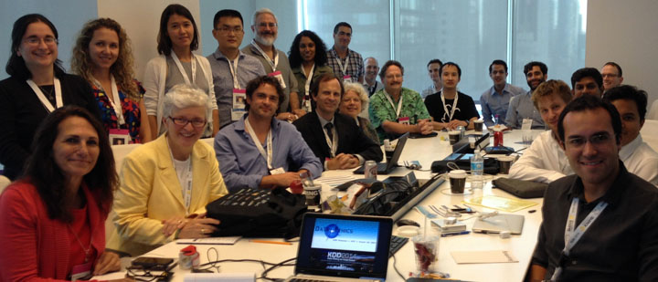

Held in conjunction with KDD 2014, the Data Ethics workshop addressed a broad spectrum of ethical issues in data collection, storage, analysis, and sharing.
The workshop was a forum to explore data science's potential ethical implications -- both positive and negative -- for data analytics practitioners and researchers in academia and industry. Perspectives from those in the humanities and social sciences were also welcome.
Topics
Relevant areas of interest include but are not limited to:
- Balancing transparency/openness vs. privacy/security
- Intentional and unintentional impact
- Balancing reward vs. risk of data usage
- Data use and re-use
- Theory vs. practice in data ethics
- Case studies of ethical issues that have arisen in data science
- "Hippocratic Oath for Data Scientists"
- Data ethics and the law
- Commercial / economic dimensions of data ethics
- Safe and effective structures for "data philanthropy"
- Data ownership vs. data as a public good
- What data can/should be collected in public
- Surveillance technologies: pros and cons
- Data anonymization/scrubbing, and data de-anonymization
- Cross-cultural differences in data ethics
- Human data processing and the ethics of microtasking/crowdsourcing
- Development of ethical norms and/or suggested checklists for data practitioners
Program
(Download printable PDF version of program.)
| 2:00-2:10 | Welcome |
|---|---|
| [Slides] | Kayla Jacobs (Technion: Israel Institute of Technology) |
| 2:10-3:00 | Data of Vulnerable Populations |
|
Data and Human Trafficking Mark Latonero (University of Southern California) |
|
|
[Paper] [Slides] |
Mining Data Related to Children: Ethical Challenges Daya Wimalasuriya (University of Moratuwa) Dejing Dou (University of Oregon) Dilini Wimalasuriya (Northshore College of Business and Technology) |
| 3:00-3:10 | Poster Pitches |
|
[Paper] [Slides] [Poster] |
Finding the Most Appropriate Auxiliary Data for Social Graph Deanonymization Priya Govindan (Rutgers University) Sucheta Soundarajan (Rutgers University) Tina Eliassi-Rad (Rutgers University) |
|
[Paper] [Slides] [Poster] |
Decision Tree Classification on Outsourced Data Koray Mancuhan (Purdue University) Chris Clifton (Purdue University) |
| 3:10-4:00 | Privacy |
|
[Paper] [Full Guidelines] [Slides] |
Ethical Privacy Guidelines for Mobile Connectivity Measurements Bendert Zevenbergen (Oxford Internet Institute) |
| [Paper] |
Considering Privacy in Predictive Modeling Applications Troy Raeder (Dstillery) Brian Dalessandro (Dstillery) Claudia Perlich (Dstillery) |
| 4:00-4:30 | Coffee Break |
| 4:30-5:20 | Philosophical Themes in Data Ethics |
|
[Paper] [Slides] |
Big Data, Ethics, and the Social Implications of Knowledge Production Ralph Schroeder (Oxford Internet Institute) Josh Cowls (Oxford Internet Institute) |
| [Paper] |
Data Mining and the Discourse on Discrimination Solon Barocas (Princeton University) |
| 5:20-6:00 | Summary Panel |
Participants
(View more participant photos from the workshop.)
- Solon Barocas (Princeton)
- Daizhou Chen (Dstillery Inc.)
- Chris Clifton (Purdue University)
- Josh Cowls (Oxford Internet Institute)
- Andrea Costa (Consultant Data Visualization)
- Brian Dalessandro (Distillery Inc.)
- Priya Govindan (Rutgers University)
- Francisco Grajales (University of British Columbia)
- Yulig Grinberg (Columbia University)
- Melissa Han (Dstillery Inc.)
- Derrick Harris (Gigaom)
- Dominique Haughton (Bentley University, Paris I University, Toulouse I University)
- T. Ryan Hoens (Microsoft)
- Avrom Jacobs (NormaTec)
- Kayla Jacobs (Technion: Israel Institute of Technology)
- Tim Kucejko (Freelance)
- Mark Latonero (Data & Society Research Institute)
- Koray Mancuhan (Purdue University)
- Carlos Mazariegos (Carnegie Mellon University)
- Catherine McGeoch (Amherst College, D-Wave, ACM)
- Troy Raeder (Distillery Inc.)
- Bernard Rous (ACM)
- Daya Wimalasuriya (University of Moratuwa)
- Ran Wolff (Yahoo Labs)
- Bendert Zevenbergen (Oxford Internet Institute)
Organizers & Contact
- Kayla Jacobs (Technion: Israel Institute of Technology)
- Robert Munro (Idibon)
For questions or comments, e-mail the organizers at
data-ethics-kdd-2014-organizers@googlegroups.com.
KDD 2014
The workshop was run in conjunction with the 20th ACM SIGKDD International Conference on Knowledge Discovery and Data Mining (KDD'14), whose special theme for 2014 was "Data Mining for Social Good."